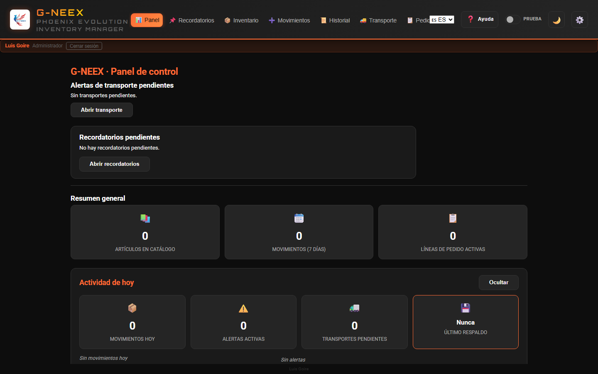
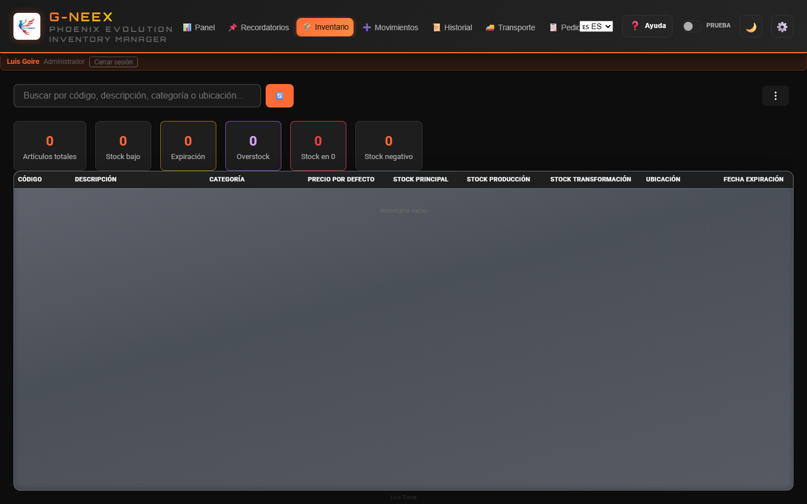
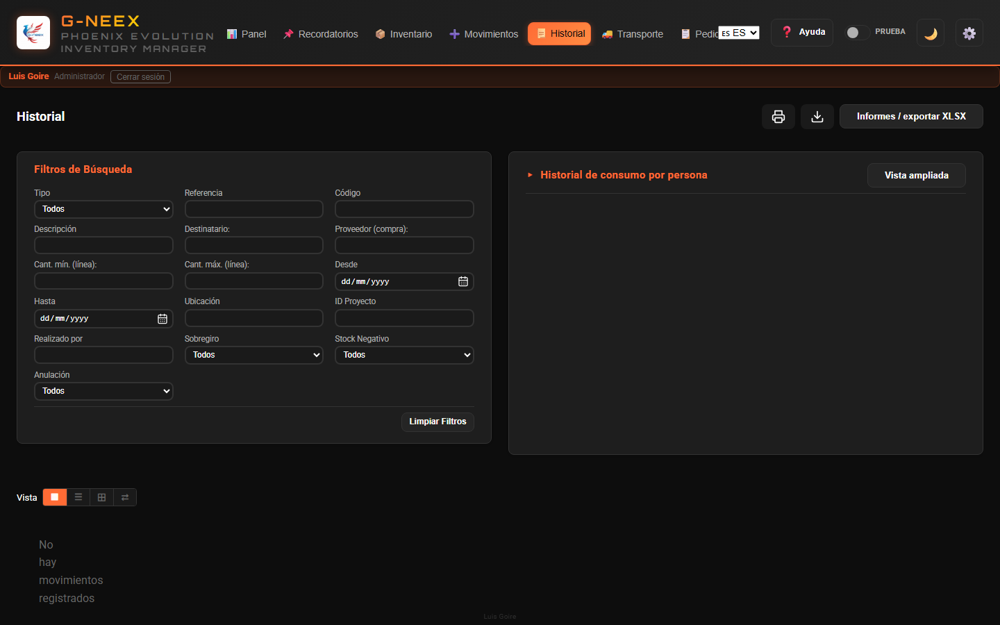
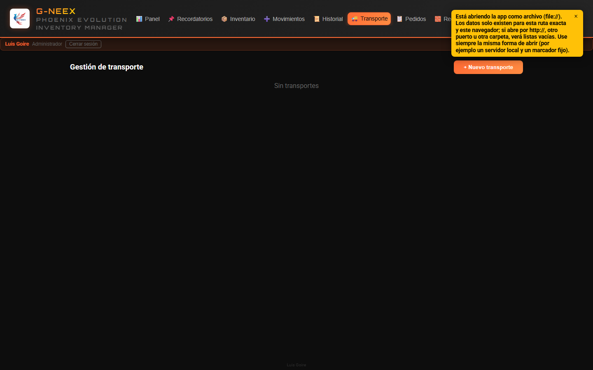

Phoenix Cell G-NEEX es desarrollada por Luis Goire, de forma aficionada y con interés en la programación, en camino a formarse como programador.
Actualizado: mayo de 2026 (v1.7)
Si vienes de la 1.6, los puntos abajo son lo único nuevo. El resto del manual aplica igual.
--welcome-duration en CSS (por defecto 6 s) y sirve también como margen de carga de la app. El scanner verde Matrix (#00ff41) cruza despacio la pantalla, los anillos orbitales se cierran alrededor del logo, «BIENVENIDO A» se revela por barrido, «G-neex» parpadea con flicker fuerte tipo neón y queda encendido, y por último aparecen «PHOENIX EVOLUTION» y tu nombre. La barra de progreso cubre casi toda esa duración útil. No se repite al recargar la pestaña; vuelve a salir al volver a iniciar sesión.boxStocks y locationStocks).stockPrincipal = máx(actual, suma(cajas) + suma(ubicaciones)). Nunca reduce el principal; solo lo sube si tus cajas/ubicaciones suman más.Codigo, Descripcion, StockPrincipal (editable).gneex-hosted-api: la app sigue 100 % offline; el cliente GneexApiClient queda preparado para conectarse al backend cuando esté en producción.Phoenix Cell G-NEEX surge de una necesidad real en entorno industrial: reforzar el control de inventario cuando no había más ayuda tecnológica que un ordenador, sin margen para otras infraestructuras ni soluciones externas.
La base fue una hoja Excel que, frente a incidencias diarias de fábrica y a errores operativos, fue incorporando macros y automatización, problema a problema. Aquello evolucionó de un cuadro de control hacia un gestor de inventario integrado en la propia hoja.
Paralelamente, ese trabajo se convirtió en aprendizaje práctico: al automatizar respuestas a problemas reales se consolidaron conocimientos de programación y scripts. Se avanzaba en dos frentes —operativo y formativo— a la vez.
Tras un daño grave en el archivo, pudo recuperarse tras mucho esfuerzo; de ahí el nombre Phoenix —lo que renace de sus cenizas—. Esa hoja, recuperada y mejorada, es el antecedente directo y, en buena medida, el ADN de la aplicación web G-NEEX.
La línea Phoenix en hoja de cálculo sigue utilizándose donde aporta valor hasta que G-NEEX alcance plena madurez para el uso cotidiano en entorno web. Este software se entiende como un primer paso hacia una herramienta que aspira a seguir creciendo.
El mismo texto contextual está disponible en la aplicación en ⚙️ Configuración → pestaña Antecedentes.
Bajo ⚙️ Configuración hay ajustes y herramientas de apoyo: copias o intercambio de datos, listas, editor de artículos, recepciones, preferencias, etc. Este manual explica el funcionamiento y las pantallas de G-NEEX; el despliegue y la política de uso en su planta o empresa no se documentan aquí.
La pestaña Import/Export solo está disponible para la cuenta con rol administrador. No basta con otros permisos ni con una elevación temporal de permisos: esas sesiones no ven esa pestaña y, al abrir Configuración, entran en Antecedentes. Ahí se agrupan el respaldo JSON completo (exportar/importar), solo movimientos (fusionar), transportes expedidos (fusionar), inventario inicial CSV/XLSX, archivar y reimportar movimientos, borrar base de datos y la vista rápida de destinatarios de Consumo diario. Quien no sea administrador debe usar Empleados y el resto de pestañas permitidas para su perfil.
Ruta: ⚙️ Configuración → pestaña Import/Export (solo administrador)
GNEEX_Backup_YYYY-MM-DD_HH-MM-SS.json con toda la información de la aplicación (inventario —ubicación por artículo, stock por ubicación/caja y catálogo de ubicaciones incluidos—; movimientos; listas de destinatarios de Consumo diario —plantilla y ocasionales/externos—; lista de proveedores; transportes; líneas de pedidos a proveedor; usuarios; contadores de referencias; etc.)Uso habitual del respaldo completo: copia de seguridad o traslado de un entero a otro equipo. Para aportar solo la actividad operativa a otra copia suele usarse además el flujo exportar / importar solo movimientos descrito a continuación.
La aplicación desplegada (por ejemplo en HTTPS) se abre en cualquier navegador con la misma URL. Los datos viven en el localStorage de cada dispositivo: no se sincronizan solos entre PC y móvil. Para llevar la misma copia de trabajo a otro aparato, el administrador debe exportar el JSON en un equipo y importarlo en el otro (correo, nube, cable, etc.). El inicio de sesión y otras funciones que usan criptografía del navegador requieren HTTPS o localhost; si algo falla al abrir solo por IP y http:// en la red local, use la URL pública de despliegue o consulte el mensaje de error en pantalla.
Solo movimientos (fusionar actividad): En el mismo apartado, Exportar solo movimientos (GNEEX_Movements_…json) e Importar y fusionar movimientos intercambian movimientos entre instancias. La fusión añade únicamente movimientos cuyo id no exista ya en la copia de destino y aplica las cantidades al inventario (recepciones de material se recrean si el archivo trae datos suficientes). Si el id ya existe, se conserva el movimiento local. No sustituye listas, transportes ni el resto de datos; conviene partir de catálogos alineados (mismos artículos) y saber que fechas muy entremezcladas entre copias pueden desajustar el orden lógico del stock. Confirme siempre en el diálogo que muestre la aplicación.
Nota (respaldos y sobregiro): El respaldo completo y el archivo solo movimientos serializan los movimientos tal como están en el almacenamiento local (incluido el campo técnico hadOverdraft). El formato y la fusión no cambian. Al iniciar, la aplicación puede normalizar valores incoherentes en Compra de stock y Recepción de material. En historial, filtros, informes XLSX y exportaciones legibles se aplica una regla coherente: una compra o recepción no se trata como sobregiro solo por un flag antiguo incorrecto.
Vista rápida: Solo el administrador ve el bloque en ⚙️ Configuración → Import/Export → «Destinatarios (vista rápida)». La edición de plantilla y ocasionales sigue en la pestaña Empleados.
Ruta: ⚙️ Configuración → pestaña Proveedores para mantener la lista maestra de nombres.
Quien use Pedidos puede indicar el proveedor en cada línea (texto libre o sugerencias cargadas desde esa lista). El número de OC/PO no se pide al crear el pedido; se registra al recibir mercancía en Movimientos → Compra de stock (junto al packing slip).
Para liberar espacio eliminando movimientos antiguos:
GNEEX_Archived_Movements_FROM_to_TO_YYYY-MM-DD_HH-MM-SS.jsonEl JSON incluye una lista legible movements (resumen para lectura e informes) y _rawMovements con copia íntegra de cada movimiento tal como estaba guardado. El campo de sobregiro en la parte legible sigue la misma regla que el historial en pantalla; la copia en _rawMovements conserva los datos técnicos sin reinterpretar.
Permite importar un archivo CSV o XLSX con el inventario inicial. Las columnas deben coincidir con el formato esperado.
Puede usar el botón de icono de plantilla para exportar una hoja .xlsx con el orden correcto de columnas, encabezado con estilo (naranja) y una fila de ejemplo editable. Si edita en Excel, puede guardar como CSV manteniendo el mismo orden de columnas.
BORRAR TODO (o DELETE ALL / SUPPRIMER TOUT)La pantalla pide un texto fijo de confirmación para evitar un borrado accidental; siga el procedimiento operativo de su entorno.
G-NEEX guarda inventario, movimientos, usuarios y sesión en el almacenamiento local del navegador (por ejemplo localStorage). Las contraseñas se guardan con hash y sal; no aparecen en texto plano en el código de la aplicación. Quien tenga acceso al equipo o al perfil de usuario, o una extensión del navegador maliciosa, podría leer o alterar esos datos. La aplicación no sustituye a un servidor central con políticas corporativas de identidad. Use bloqueo de sesión del sistema, cuentas personales y respaldos exportados según el procedimiento de su organización. Al importar un archivo JSON de respaldo, compruebe que procede de una fuente de confianza.
Ruta: ⚙️ Configuración → pestaña Edición de artículo
Al entrar, si la aplicación solicita un código de desbloqueo, siga el asistente en pantalla (crear o validar) y use Desbloquear para continuar. Luego busque el artículo por código o descripción, modifique los campos (código, descripción, categoría, precio por defecto, stocks, ubicación, mínimo, máximo, etc.) y pulse Guardar.
Para Ubicación, puede componer el texto con varias etiquetas separadas por coma; el selector incluye agrupadas las ubicaciones del catálogo efectivo y BOX1…BOX51 para añadirlas con Agregar, además del catálogo de ubicaciones en la misma pestaña (⚙️).
Si marca Tratar como consumible de inventario y pulsa Guardar, la aplicación añade automáticamente el nombre (la descripción del artículo, o el código si no hubiera descripción) a la lista de ⚙️ Configuración → Consumibles, usada para constancias de compra sin inventario y pedidos de consumible. Si desmarca esa opción y guarda, elimina de esa lista la entrada que coincidiera con la descripción o código antes del cambio (si estaba en la lista por ese vínculo).
El comportamiento de stock del modo consumible (qué movimientos alteran o no cantidades) sigue las pantallas y mensajes de la aplicación.
Ruta: ⚙️ Configuración → pestaña Expiraciones
Introduzca usuario y contraseña. La sesión se valida en el navegador; la cuenta administrador puede crear usuarios y cambiar contraseñas en ⚙️ Configuración → Usuarios.
Al añadir un usuario con rol «Usuario», puede elegir una plantilla: Supervisor y los perfiles de referencia integrados (por ejemplo Keith Lake, Guest, Patrick). Las plantillas antiguas de operarios ya no se ofrecen para nuevas cuentas. Cada opción muestra una descripción breve al pasar el ratón por encima (title). Para un administrador nuevo, seleccione rol Administrador; ese rol no usa plantilla de matriz. El detalle de claves y permisos está en PlantillasPermisos.xlsx.csv en la raíz del repositorio (documentación y futura API).
Las imágenes de fondo de la pantalla de acceso se definen en assets/login-bg-manifest.json (rutas bajo assets/). Si no hay lista o está vacía, se usa el logo. Cuando hay varias imágenes, pueden rotar automáticamente.
Tras conectar, accede al panel (véase la figura de §2.2).
Al entrar a la aplicación, se muestra un panel con información del día. En la barra superior puede cambiar de módulo con los botones (p. ej. 📦 Inventario hacia §2.3, ➕ Movimientos hacia §2.4):

| Tarjeta | Qué muestra |
|---|---|
| Movimientos hoy | Cantidad de movimientos creados hoy, con desglose por tipo |
| Alertas activas | Stock bajo + stock negativo + artículos por expirar |
| Transportes pendientes | Transportes que no han sido expedidos ni anulados |
| Último respaldo | Cuándo se hizo el último respaldo (alerta si hace más de 7 días o nunca) |
Pulsar Ocultar / Mostrar para colapsar/expandir el panel.
Vista al pulsar el botón Inventario (📦) en la barra; se ven búsqueda, filtros, tarjetas y la tabla de artículos.

Escribir en el campo de búsqueda para filtrar por código, descripción, categoría o ubicación.
Junto al campo de búsqueda, el botón de menú (tres puntos verticales ⋮) concentra las acciones del inventario: exportar XLSX, imprimir, mostrar u ocultar las barras de filtro en línea (Caja / ubicación, Depósito, Consumible inv.), filtros de problemas y de alerta de stock bajo desactivada, vista Stock a fecha, resumen por caja, gestión por caja, etc.
La primera opción del menú es Ocultar filtros en línea (icono de flecha hacia la derecha): cierra de una vez las tres barras desplegables cuando alguna está visible y devuelve cada lista a Todos si hacía falta. Esa opción está deshabilitada cuando ninguna de esas barras está abierta; cuando alguna lo está, sirve para minimizar la zona de filtros sin repetir la acción por cada tipo de filtro.
Usar el filtro a fecha para consultar el inventario tal y como estaba en una fecha seleccionada. Mientras está activo, afecta tabla, tarjetas y salidas de exportación/impresión.
Las tarjetas superiores muestran:
Pulsar cualquier tarjeta (excepto "totales") abre un modal de detalle con la lista de artículos afectados, opción de exportar XLSX e imprimir.
En el modal de stock bajo, las primeras columnas son Ignorar alerta de stock bajo, Acciones (🛒 para añadir el artículo a la lista de compra), Código y a continuación el resto de campos (descripción, stocks, fechas, ubicación).
Columnas: Código, Descripción, Categoría, Precio por defecto, Stock Principal, Stock Producción, Stock Transformación, Ubicación, Expiración.
En la columna Descripción, el icono 📝 (más suave si el artículo aún no tiene notas) abre, cuando esté activo, un cuadro para ver y editar las notas; Guardar persiste los cambios. Si el control no ofrece edición pero el artículo sí tiene notas, a menudo puede abrirse el cuadro en solo lectura; si no hay notas, la celda se muestra como texto normal.
Los colores de las filas y celdas indican el estado del artículo (rojo = negativo, amarillo = bajo, naranja = expirando, verde = bien, etc.). Además: si toda la fila muestra un resaltado violeta/indigo suave con borde, es la fila seleccionada con el teclado (flechas arriba/abajo en la tabla). Si solo la primera celda (código) tiene una banda vertical violeta, el artículo está marcado como consumible de inventario. En la celda de stock principal, un recuadro violeta puede indicar sobre-stock (por encima del máximo configurado).
Si la ventana es estrecha, puede desplazar la tabla horizontalmente para ver todas las columnas sin comprimir los encabezados.
Ubicación (campo de texto del artículo): para validaciones (movimientos, importaciones, consistencia de stock) solo cuentan como ubicación canónica las etiquetas del catálogo efectivo de almacén y las referencias BOXn. Si el texto guardado no puede normalizarse por completo a ese conjunto, puede aparecer un aviso al guardar desde el editor; ya no se inserta ningún marcador automático de reubicación.
Hay un selector Caja / ubicación para filtrado rápido por número de caja inferido desde el texto de Ubicación, desde los números de caja con stock en la gestión por caja, y por ubicaciones de almacén del catálogo interno (p. ej. E1R, ETOP, BIN 8, CONTAINEUR CHANTIER, ARMOIRE AVEC CLE) cuando el texto de ubicación coincide o la misma ubicación aparece solo en stock por ubicación (chips con cantidad); en la tabla se muestran etiquetas junto a la celda. Junto a exportar e imprimir, el botón Resumen por caja (desde ubicación) agrupa los artículos cuando en Ubicación aparece algo como BOX1, BOX 1 u otras variantes («box», «caja» + número; el espacio después de BOX es opcional); puede haber varias cajas en el mismo texto, separadas por comas (p. ej. «BOX1, caja 2»); en el modal puede pulsar una fila para ver la lista de artículos de esa agrupación. Si un artículo tiene varias cajas en su ubicación, aparece contabilizado en cada caja detectada. Además, con Gestión de stock por caja puede añadir, editar, eliminar y repartir stock entre cajas y las columnas Stock producción / Stock transformación; también puede transferir de caja a ubicación directa (sin caja). Esa operación descuenta la caja origen, añade la ubicación al texto del artículo (sin duplicar) y registra cantidad por ubicación (chips como E2R: 12) en la celda de Ubicación. También puede exportar todo el stock por caja (mismo formato que la plantilla) para respaldo o edición e importarlo de nuevo, descargar una plantilla vacía si la necesita, e importar cantidades por caja. El formato oficial en la primera fila es Codigo, Caja, UbicacionCaja, CantidadCaja, CantidadCajas, Vacia (hoja Datos, la que genera G-NEEX). En la columna Vacia puede usar 1/true/sí para marcar la caja como vacía (fuerza cantidad 0). En movimientos de salida/consumo la caja es opcional: si la selecciona, descuenta en caja e inventario general; si no, descuenta solo inventario general. Al guardar un cambio de cantidad por caja con artículo vinculado, también se registra un ajuste (AJUSTE) en Historial (motivo opcional), además de actualizar caja y stock principal.
Prueba rápida recomendada (ubicación):
BOX1E1R o e1r (no distingue mayúsculas)BIN 8, BIN2 o BIN 2CONTAINEUR CHANTIERBOX1, BOX2caja 3, BOX4sin cajaBOX52 (fuera de rango, no se detecta)BOX1, BOX1 (no duplica la misma caja)Las ventanas de impresión del programa usan papel A4 vertical (márgenes estándar); las tablas no fuerzan todas las columnas al mismo ancho (la columna código del artículo va en una sola línea y legible); el resto del texto largo se divide en la celda cuando hace falta (inventario, historial, detalle de movimiento y demás listados imprimibles).
Exportar e imprimir en este apartado requieren que esos botones estén visibles y activos en su pantalla.
Pestaña Movimientos (➕ en la barra): cuadrícula de tipos; al elegir un tipo, el formulario en ventana superpuesta.
Si todas las cantidades son 0, la aplicación no permite procesar el movimiento (no hay cambio de stock).
Los botones de crear y Procesar movimiento se usan cuando aparecen activos; si no, el formulario o la acción no están habilitados en su sesión.
| Tipo | Efecto en stock | Proyecto |
|---|---|---|
| Ajuste | Suma o resta | Opcional |
| Consumo Diario | Resta | Automático |
| Ferretería | Resta | Obligatorio |
| Especial | Suma o resta | Opcional |
| Lista de Chequeo | Resta | Obligatorio |
| Merma | Resta | Obligatorio |
| Retorno | Suma | Opcional |
| Desmantelar | Suma | Obligatorio |
| Transferencia | Suma o resta | Opcional |
| Transformación | Resta | Opcional |
| Enviar a Producción | Resta | Opcional |
| M.E. Producción | Resta | Obligatorio |
| M.E. Obra | Resta | Obligatorio |
| Stand-By | Sin efecto (pendiente) | Opcional |
| Compra de Stock | Suma | Formulario especial |
| Recepción Material | Suma (o provisional, según reglas de categoría) | Obligatorio |
Los movimientos Stand-By se guardan como borradores sin afectar el inventario:
Lista de Stand-By: Muestra los borradores pendientes con opciones:
Con la sesión activa, hay hasta dos accesos flotantes (esquina inferior derecha por defecto), ocultos al inicio. Para mostrar el globo de Stand-by o el de Consumo diario, abra Movimientos y pulse el tipo correspondiente; el globo vuelve a mostrarse mientras no lo oculte.
| Globo | Función |
|---|---|
| Stand-by (⏸) | Acceso rápido a borradores Stand-by pendientes; panel con lista, ir a Movimientos u ocultar el globo. |
| Consumo diario (📅) | Panel de líneas del tipo Consumo diario aún no procesadas en un solo movimiento. |
Consumo diario (cierre y recuperación): las líneas pendientes quedan asociadas al día local. Si quedaron líneas de un día anterior (por ejemplo, la aplicación estuvo cerrada o cambió la medianoche con la pestaña abierta), al volver puede mostrarse un aviso y ejecutarse un cierre/recuperación automático cuando las reglas de stock lo permiten; si el cierre automático no puede aplicarse por sobregiro, deberá revisar el carrito manualmente. Este tipo de movimiento no usa número de proyecto en pantalla. Mientras tenga seleccionado el tipo Consumo diario en Movimientos, no se interrumpe con el cierre automático nocturno (≈23:00) ni con el cambio de día; al cambiar a otro tipo de movimiento se intentará el cierre pendiente si corresponde.
Fecha y hora del movimiento (Consumo diario): cada vez que añade una línea al carrito se registra ese instante. Al procesar, la fecha guardada del movimiento es la del primer artículo añadido al carrito en ese lote (si alguna línea antigua no tuviera marca, se usa como respaldo la hora en que se procesa).
Cantidades decimales: cantidades y stocks se muestran y guardan con como máximo cuatro dígitos después del separador decimal (redondeo).
Destinatario con «Otro (nombre no listado)»: escriba el nombre libremente cuando no esté en el desplegable. Esta sección solo exige identificar quién recibe el material; no hay clasificación adicional.
Historial por destinatario editable: en Historial → Consumo diario por destinatario puede editar directamente el nombre del destinatario en la tabla, guardar cambios y limpiar la tabla visible (según filtros de persona/código) cuando necesite depurar ese registro.
Los movimientos que retiran stock más allá de lo disponible (consumos, transferencias, envíos a producción, etc.) pueden abrir un modal con motivo obligatorio y quedar marcados en el historial con el indicador de sobregiro (! y aviso en el detalle).
Compra de stock y Recepción de material son entradas de mercancía: no usan ese flujo de justificación por sobregiro. Si en datos antiguos constaba por error un marcador de sobregiro en esos tipos, la aplicación no lo muestra como sobregiro en lista, filtros ni detalle, puede corregir el dato al cargar y los informes siguen la misma regla.
Al liberar un Stand-by, el cálculo de si habría sobregiro usa el tipo de destino elegido en el Stand-by (no el tipo que tuviera seleccionado en el formulario de Movimientos en ese instante), para evitar falsos positivos.
AJU000042, compra COM000003). Las referencias antiguas con más dígitos, solo numéricas (000042) o con guion (COM-001) se normalizan al cargar el historial.Ruta: pestaña Pedidos (icono 📋 en la barra superior).

Planifica líneas de pedido vinculadas al inventario (código, descripción, proveedor, cantidad). El número de OC/PO se registra al recibir en Compra de stock (packing slip), no al crear el borrador.
Encima del listado puede alternar la Vista entre tabla detallada (por defecto) y mosaico de tarjetas; la preferencia se guarda en este navegador.
Encima de la tabla puede filtrar por:
Limpiar filtros restablece todo.
| Estado | Significado |
|---|---|
| Inactiva | Borrador; puede editar cantidad y proveedor. |
| Pedida | Pedido confirmado; fecha de pedido; en espera de mercancía. |
| Recepción parcial / total | Según lo recibido respecto a la cantidad pedida. |
| Cancelada | Solo si no hubo recepciones. |
Al pulsar Recepción parcial o Recepción total (pendiente), la aplicación pasa a Movimientos, selecciona Compra de stock y rellena el formulario. Revise y pulse Procesar movimiento. Si modifica artículo o cantidad de forma incompatible con la línea, la compra se guarda pero puede no vincularse (aparece un aviso).
Compra solo desde Movimientos (sin abrir antes el panel Pedidos): tras Procesar movimiento, si existe una línea en estado Pedida o recepción parcial del mismo artículo de inventario y (cuando informó proveedor en el formulario de compra) mismo proveedor, puede aparecer un diálogo preguntando si esa compra corresponde a ese pedido pendiente; los botones son Sí y No (pregunta cerrada; No descarta solo el vínculo, la compra sigue guardada). Si confirma, se aplican cantidad Recibida, estado de la línea y acciones del panel igual que cuando la recepción se inició desde Pedidos (incluye casos parciales y excesos con las preguntas adicionales). Si no enlaza ninguna línea, puede proponerse registrar la compra como nueva línea de pedido (confirmación igual con Sí / No).
Cada línea muestra una referencia tipo #AJU000012 (siglas + correlativo; los datos antiguos pueden ser solo dígitos) y un historial de fechas.
Si la compra proviene del panel Pedidos, el detalle del movimiento muestra un recuadro; en la lista puede aparecer el icono 📋.
Gestionar líneas, recepciones y la exportación XLSX del panel depende de las acciones y botones que tenga visibles al usar Pedidos y Movimientos en su copia.

La pestaña Historial muestra los movimientos filtrados con color e icono según el tipo.
Sobre la cuadrícula, el selector Vista permite Mosaico (iconos en cuadrícula, por defecto), Lista (filas compactas, estilo explorador de archivos), Detalles (tabla con columnas) o Carrusel cronológico (tarjetas en secuencia horizontal de más reciente a más antiguo; en la franja superior y en cada tarjeta la marca de tiempo va como día, mes en 3 letras, año en 4 cifras y hora local; las flechas laterales avanzan un movimiento). En las tarjetas minimizadas se muestra también el ID de proyecto cuando aplica. La preferencia se guarda en este navegador.
Formato de fechas: en toda la aplicación, las fechas en pantalla usan día, mes en tres letras y año en cuatro cifras; si muestran hora, es en 24 h hora local (inventario, tablas, recordatorios, transporte, metadatos legibles en exportaciones, etc.).
Los movimientos totalmente anulados y los de anulación parcial (alguna línea anulada sin anular todo el movimiento) se muestran en Mosaico, Lista y Carrusel con un sello diagonal (marco discontinuo inclinado); el texto «Anulado parcial» identifica el segundo caso. En la vista Detalles y en el modal, el estado usa la misma denominación.
Puede filtrar por:
Limpiar filtros vacía todos los criterios.
Pulsar una tarjeta, una fila de lista o una fila de la tabla de detalles para ver el mismo modal de detalle completo:
Adjuntos/…; para esos puede usarse «Copiar ruta (versión antigua)» y abrirlos desde el explorador.En el modal de detalle:
Anular o revertir en el detalle requiere que el modal muestre esas acciones activas (según el tipo y estado del movimiento).
Acceso: botón Transporte (🚚) en la barra superior. En la pestaña verá el tablero y las acciones (crear, expedir, anular, etc.) según aparezcan habilitadas en su pantalla.

Muestra tarjetas por cada transporte con: proyecto, fecha de expedición, estado de líneas (Listo/Parcial), recepciones vinculadas.
El selector Vista permite Mosaico (rejilla de tarjetas) o Lista (una columna de tarjetas a ancho completo); la preferencia se guarda en este navegador.
Pulsar una tarjeta para expandir su detalle. En el detalle expandido, Adjuntos (📎) enlaza documentos del envío desde cualquier carpeta del equipo (sin copiarlos a la app); visualización en Chrome/Edge como en el historial de movimientos.
En la parte superior de la pestaña aparece un resumen Material preparado para partir: por cada transporte activo (no expedido ni anulado) cuenta listas de chequeo, movimientos M.E. obra, M.E. producción vinculados al proyecto y recepciones de material del proyecto que aún no se han marcado como expedidas. Debajo puede listarse material eléctrico en cola cuando aún no hay transporte activo para ese proyecto.
Al pulsar Expedir camión, además de registrar la salida del transporte, la aplicación marca como expedidos (ya no en la empresa) los movimientos de lista de chequeo, M.E. obra y M.E. producción incluidos en ese envío y las recepciones de material del mismo proyecto que todavía no hubieran sido expedidas (útil cuando hay varios camiones para un proyecto: cada expedición marca solo las recepciones pendientes hasta ese momento). En el detalle del movimiento en Historial aparece la fecha si ya salió con transporte. Si anula expedición, reactiva la planificación o elimina el transporte, se revierten esas marcas ligadas a ese transporte.
Si alguna acción no está disponible, el botón en pantalla se muestra inactivo o no aparece.
Los movimientos de tipo Lista de Chequeo y M.E. Obra crean o vinculan transportes automáticamente. Si ya existe un transporte activo para el proyecto, se añaden líneas al existente.
Algunas operaciones críticas (p. ej. Expedir, Eliminar) solo se habilitan cuando el estado de las líneas lo permite.
Los archivos se nombran descriptivamente con el rango de fechas (extensión .xlsx; hoja «Datos» con estilo del tema y hoja «Info» con metadatos):
GNEEX_All_Movements_2024-03-15_to_2026-04-15.xlsxGNEEX_Item_Consumption_cable_2025-01-10_to_2026-03-20.xlsxEl botón de reporte o descarga en XLSX se usa cuando está visible; los tipos de informe se eligen en el diálogo.
Ruta: ⚙️ Configuración → pestaña Recepciones
Tabla con todas las recepciones registradas. Se pueden buscar por texto.
Editar y Eliminar requieren que esos botones aparezcan activos en la fila (según su copia y el movimiento vinculado).
Las preferencias de tema e idioma se guardan automáticamente. La instantánea del modo demostración es independiente del respaldo JSON. Nota: si durante la demostración exporta archivos a una carpeta en su equipo (por ejemplo XLSX en la carpeta del proyecto), esos archivos no se eliminan al salir del modo; solo se revierte lo guardado en localStorage del navegador.
En la parte superior se muestran, entre otras, la identidad de la sesión activa, el resumen de rol o modo (según muestre su copia) y Cerrar sesión para volver a la pantalla de acceso.
Según el contexto (tipo de tarea, estado de los datos, pestaña abierta), algunas acciones aparecen atenuadas o un mensaje breve explica que la acción no aplica. No indica un fallo de la aplicación: en otro flujo o con otros datos, el mismo botón puede activarse de nuevo.
Ruta: botón con icono de recordatorio en la barra, pestaña Recordatorios cuando la tenga a la vista.

Desde ahí se crean y gestionan recordatorios operativos con fecha objetivo y prioridad, cuando el módulo esté accesible en su entorno.
La aplicación es obra de Luis Goire, quien la desarrolla como aficionado a la programación y con la idea de seguir creciendo en el oficio de programador.
Correo: blakillbyte@gmail.com
El manual recorre por secciones el inventario, movimientos, pedidos, historial, transporte, recepciones en configuración, reportes, import/export de datos y el modo demostración. Cada módulo se usa con los botones y pestañas visibles: si algo no aplica, la interfaz lo desactiva o lo oculta sin bloquear el resto del trabajo.